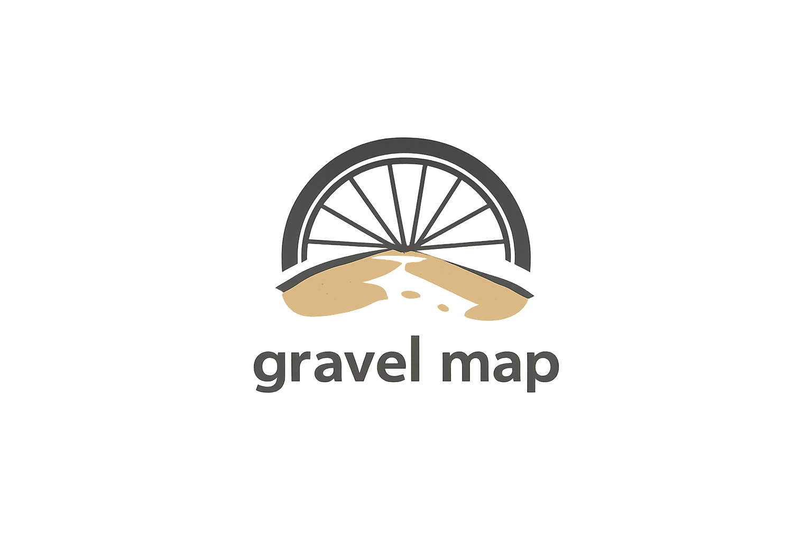

Laad dit gebied
Gebruik maximale straal als gebied te groot is
Over
Bewerkingsvoorstel
Doneer ❤️
FR
EN
NL
Oppervlakken
Kasseien / Verhard
Echte rijdbare gravels
Andere rijdbare paden
Technischere gravels
Technische paden
Zware paden
OpenStreetMap-gegevens – alleen ter indicatie

Over
×
Doneer ❤️
×